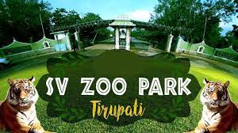

TIRUPATHI
SRI VENKATESWARA ZOOLOGICAL PARK

- It was established on 29 September 1987, and covers an area of 5,532 acres (22.39 square kilometres). It is the largest zoological park in Asia.
- The main features of the Zoo Park are:
- Mayuravani - The house for peafowl
- Mrugavani - The house for herbivores
- Vrukavihar - Living place for smaller carnivores along with parakeets, mainas, ducks, geese and a variety of other birds like flamingoes, swans, pelicans and raptors.
- The zoo had an exceptionally heavy leopard called 'Balaji', which weighed 139–143 kg (306–315 lb) against the normal weight of 70 kg (150 lb) of its class. Balaji was captured at the age of 12 in 1996, when he weighed 108–113 kg (238–249 lb).
- The leopard ate 4 kg (8.8 lb) of beef daily, the same as the other leopards in the zoo. The park's management was said to be in touch with the Guinness Book of World Records authorities seeking its entry in the records as the biggest leopard.
- Due to an illness and old age, it died at the age of 27 on 11 June 2013.